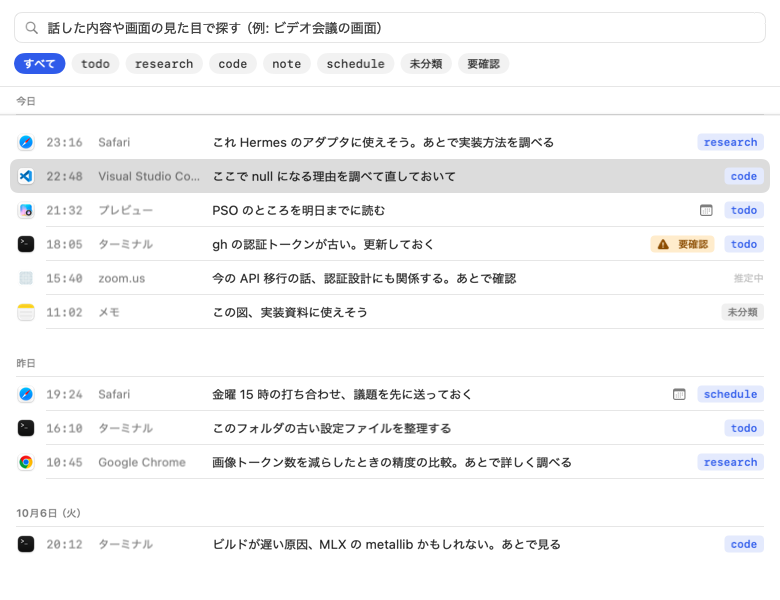
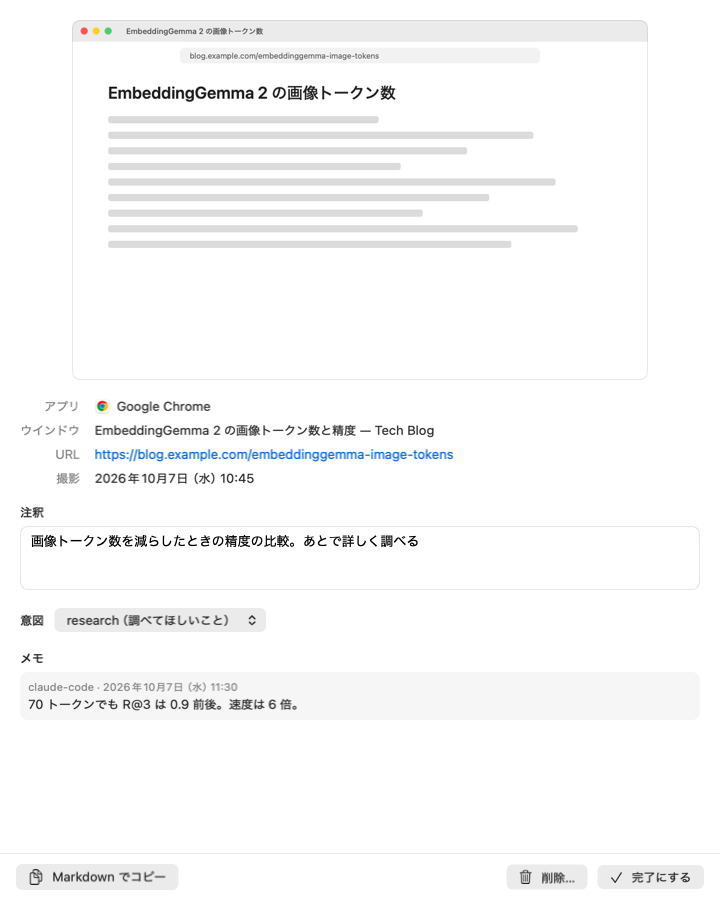
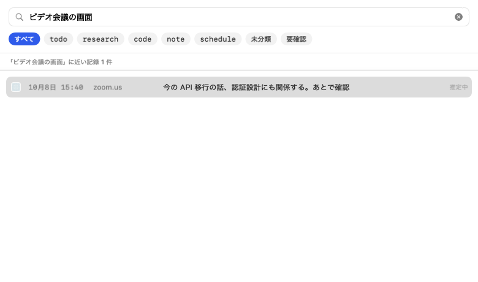
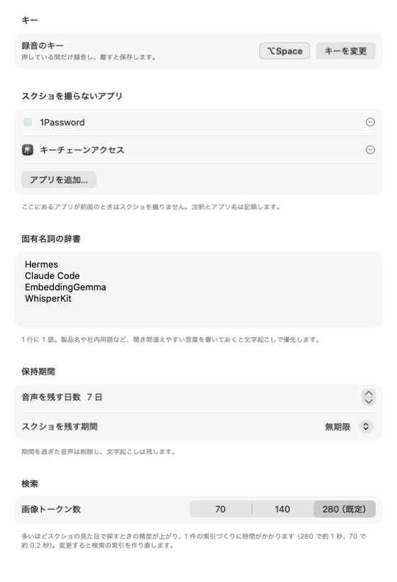
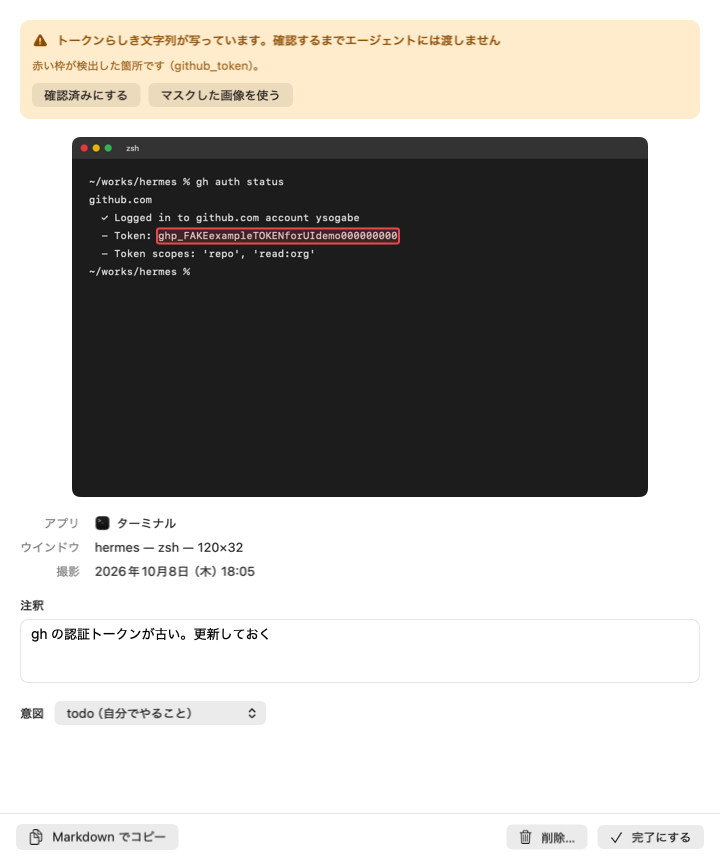

macOS アプリ · 開発版
見ている画面に、声でメモを貼る。
⌥Space を押して、ひと言話して、離すだけ。いま開いているウインドウのスクショ、アプリ名、URL、あなたの一言が 1 件の記録になって Mac に残ります。
あとから Inbox で探して、手直しして、Claude Code や自作エージェントに渡せます。

以下は 2026-10-15 時点のアプリ本体から出力した UI 画像です。表示する記録・添付画面・トークンは紹介用のサンプルです。
1 回押すと、これだけ残ります
入力時に分類も期限も聞きません。何を見て何を思ったのかが、画面・URL・注釈をまとめた 1 件の記録として残ります。
- 押す前面ウインドウとアプリ情報を取り、マイクの録音を始めます。
- 話す思ったことを、その場でひと言。固有名詞は設定の辞書で補えます。
- 離す文字起こしを保存して通知。5 秒以内なら取り消せます。分類・秘密情報の確認・検索索引は保存後に進みます。

画面も、一言も、あとから読める
「画像トークン数を減らしたときの精度の比較。あとで詳しく調べる」
元の URL とウインドウ名が残るので、考えた場所へ戻れます。文字起こしと意図ラベルは詳細画面で修正でき、エージェントが追記した調査メモも同じ記録で読めます。
Markdown でのコピー、完了、削除も詳細画面から操作できます。

話した内容と、画面の見た目で探す
「ビデオ会議の画面」
注釈とスクショを組み合わせて索引を作り、自然な文で検索できます。意図や「要確認」での絞り込みも可能です。検索モデルの準備中は文字の一致で探し、現在の検索状態を画面に表示します。

使う言葉と、残す範囲を自分で決める
録音のキー、固有名詞の辞書、スクショを撮らないアプリ、音声とスクショの保持期間を設定できます。
検索の画像トークン数を変更すると索引を再構築します。再構築中も旧索引を保持し、準備ができた世代へ切り替えます。
連続して記録するときは保存を優先します。分類や索引の更新は録音が落ち着いてから進むため、直後は「推定中」や検索準備中になる場合があります。
判断と実行は、エージェントに
記録をローカルの MCP サーバーで公開します。Claude Code や Hermes から一覧・検索・詳細を読み、調査や実装につなげられます。
> code の記録を確認して、修正案を出して
list_inbox({"intent":"code","limit":10})
→ 未処理の記録と、注釈・URL・意図を取得
get_capture({"id":"記録のID","include_image":true})
→ 詳細と、秘密情報のチェックが済んだ画像を取得
add_note({"id":"記録のID","text":"原因と修正案…"})
→ 調査した内容を、元の記録に追記list_inbox- 未処理の記録を意図や期間で絞って一覧
search_captures- 自然文で検索（画面の見た目も対象）
get_capture- 1 件の詳細と、受け渡し可能な画像を取得
add_note- 調べた結果やリンクを記録に追記
mark_done/archive- 記録を完了・アーカイブにする
上記は呼び出し方の例です。エージェントからの削除ツールはありません。MCP の接続手順
記録の処理は、この Mac で
文字起こし、意図の推定、検索、秘密情報のチェックはローカルで動きます。MCP でエージェントに渡した内容の送信先は、そのエージェントの設定に従います。

画像を渡す前に確認できる
スクショを Mac 上で読み取り、API キーやトークンなどのパターンを見つけると「要確認」を付けます。検出箇所を確認して元画像の共有を許可するか、マスクした画像を使うかを選べます。
チェック中・要確認の画像は MCP に渡しません。文字の検出には限界があるため、共有前に内容を確認してください。注釈や URL などのテキストは、画像とは別に MCP に返ります。
1Password などの指定アプリでは、スクショ自体を撮らずに注釈とアプリ名を残します。
| 権限 | 何に使うか | 許可しないと |
|---|---|---|
| マイク | キーを押している間のマイク入力を録音 | 音声を録音できません |
| 画面収録 | 前面ウインドウを 1 枚撮影 | スクショなしで保存します |
| アクセシビリティ | 録音キーとウインドウタイトルの取得 | 録音キーの登録が制限される場合があります。タイトルは取れません |
| オートメーション | 対応ブラウザの URL 取得 | URL なしで保存します |
Apple Silicon で、実装と検証を進めています
M3・24GB での結果です。録音から保存、検索、意図の推定を実装し、現在は実利用での受け入れ確認を進めています。
| 役割 | 現在の実装 | 検証結果・状態 |
|---|---|---|
| 文字起こし・保存 | Whisper large-v3-turbo CPU + Neural Engine を利用する構成 | 保存の P90 は 1.67〜1.74 秒（3 回の連続記録比較）。30 音声で文字誤り率 7.72% |
| 意図の推定 | LiquidAI d1-3B MLX・保存後に非同期処理 | ラベルの手直しに対応。実利用の手動正解データを集めて精度を評価する段階 |
| 検索 | EmbeddingGemma 2・Core ML 注釈とスクショの索引 | テキストのみの日本語評価で Recall@3 は 95.6%。索引の世代管理・再構築と品質の回帰評価を追加 |
| 秘密情報のチェック | Apple Vision OCR とパターン検出 | 検出箇所の確認・画像マスク・MCP への画像受け渡し制御を実装 |
保存速度はモデルの準備・初回推論を除いた合成音声の再生試験で、実マイク・キー操作・通知描画の測定ではありません。検索は合成 48 記録・正解あり 80 クエリの評価用データで、画像検索を含まない値です。話し方、画面、負荷によって結果は変わります。
よくある質問
どの Mac で使えますか？
Apple Silicon と macOS 15 以降が対象です。開発・実測には M3・24GB を使っています。メモリ 16GB を推奨する設計ですが、M1・16GB を含む各構成での受け入れ確認はこれからです。
音声やスクショはどこかに送信されますか？
アプリの文字起こし・分類・検索では外部に送信しません。モデルの初回取得には通信が必要です。MCP を通してエージェントに読ませた記録は、そのエージェントが利用するサービスへ送られる場合があります。
ディスクはどれくらい使いますか？
変換後のモデルは合計約 5.3GB。初回は約 8GB の取得と変換があるため、一時的に約 13GB の空きが必要です。記録の容量は画面や音声の長さで変わります。スクショは HEIC（利用できない場合は PNG）、音声は既定で 7 日後に削除し、文字起こしは残します。
オンライン会議の最中にも使えますか？
マイク入力を記録するため、会議アプリをミュートにしたまま使うことを想定しています。Context Capture は会議アプリのシステム音声を取り込みませんが、スピーカーの声や周囲の音がマイクに入れば一緒に録音されます。会議アプリごとの同時利用は実機で確認を進めています。
URL はどのブラウザで取れますか？
Safari、Google Chrome、Arc、Microsoft Edge 向けの取得処理があります。オートメーションの許可が必要です。URL を取得できなくても、ほかの情報と注釈で記録を残します。
日本語の聞き間違いや、意図の誤りは直せますか？
詳細画面で注釈を書き直し、意図ラベルを付け替えられます。設定の固有名詞辞書で、製品名や社内用語も補えます。確信度が足りない記録は「未分類」になります。手動で選んだ意図は自動推定で上書きしません。
記録がすぐ検索に出てこないことはありますか？
あります。保存の後に秘密情報のチェック、意図の推定、索引の更新を進めるため、連続して録音すると整理が後回しになります。モデル準備中や索引再構築中も検索状態を表示し、必要に応じて文字の一致で探せます。
Claude Code や Hermes とはどうつなぎますか？
付属のローカル MCP サーバーをエージェントの設定に登録します。一覧、検索、詳細、追記、完了、アーカイブの 6 ツールがあります。接続方法は MCP の手順に記載しています。
オフラインでも使えますか？
モデルの取得・変換・初回最適化が済めば、アプリの録音から検索までローカルで動きます。接続先のエージェントがオフラインで使えるかは、その構成によります。
今すぐダウンロードできますか？
現在はソースとビルド手順を公開する開発段階です。一般向けに署名・公証した配布版はまだ用意していません。配布状況は GitHub の Releases で案内します。
開発状況を GitHub で
ソースコード、ビルド手順、調査レポートを公開しています。実利用での動作確認と改善を進め、配布に向けて準備しています。